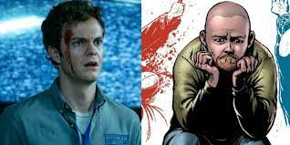
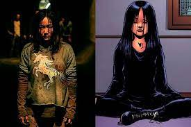
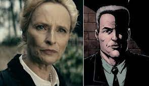
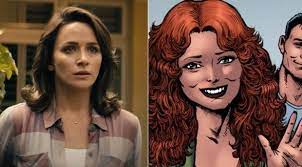

Hughie Campbell

E é esse novo sentimento que o motiva a aceitar o convite de Butcher para integrar o grupo The Boys, que tenta combater os supers para vingar e evitar as mortes acidentais, os assassinatos e outros crimes. Aos poucos, Hughie vai mudando seu temperamento passivo, mas mantém seus princípios e se torna extremamente leal aos companheiros de The Boys, arriscando sua vida para ajudá-los em diferentes ocasiões. Seu posicionamento, inclusive, o fez ganhar o respeito dos demais integrantes do The Boys. Foi o responsável pela morte de Translúcido, seu primeiro assassinato. Mas tenta salvar a vida de A-Train, que matou sua ex-namorada acidentalmente. Mantém um relacionamento conturbado com Annie/Estelar, o que os coloca em constantes riscos enquanto tentam expor e derrubar a Vought. Nas HQs, Butcher injeta Composto V em Hughie em sua primeira missão, algo que ainda não foi abordado na série televisiva. Contra sua vontade, Hughie ganha super força e indestrutibilidade. No final da série principal, Hughie confronta Butcher e tenta impedir o plano do líder do The Boys de destruir todos aqueles que tenha Composto V em seu sangue. Hughie acaba matando Butcher.
Billy Butcher

Nos quadrinhos, descobrimos que Butcher teve uma infância difícil, sempre presenciando as agressões físicas que seu pai cometia com sua mãe. Ex-militar britânico e veterano de guerra, abraçou esse lado brutal e violento em suas missões no The Boys, para o qual foi recrutado por Mallory, criadora da equipe. Isso piora após o desaparecimento de Becca.
Mother's Milk (Leitinho)
.jpeg)
Nas HQs, Leitinho também foi afetado pelo Composto V ainda no útero de sua mãe. Diferente dos supers criados pela Vought, contudo, isso não aconteceu com ele propositalmente, mas sim por sua mãe, ainda grávida, ter trabalhado em uma fábrica de conservas que um dia fora um laboratório da substância. Durante sua infância, descobriu que precisava seguir consumindo o leite de sua mãe para que não perdesse peso e ficasse fraco. Por esse motivo, até a fase adulta ele consome garrafas de leite materno que sua mãe lhe envia. Quando mais jovem, Leitinho foi para o exército, onde acabou descobrindo seus poderes ao acidentalmente matar um oponente em uma luta de boxe, ao arrancar sua cabeça com a super força que manifestou.
Frenchie (Francês)
.jpeg)
Frenchie nasceu em uma pequena vila na França, e já bem jovem partiu para a guerra, deixando para trás sua amada Marie, que prometeu lhe esperar. Após viver os horrores dos campos de batalha, Frenchie retorna como um pacifista. Mas Marie não o esperou, e começou um relacionamento com um antigo inimigo seu. Com Frenchie recusando se vingar, por seus novos princípios, seu pai assume essa função e desafia o antigo inimigo do filho para um duelo, mas acaba morrendo. Sua mãe morre pouco depois, no processo de luto. Com mais essa tragédia em sua vida, Frenchie deixa o pacifismo para trás, mata seu inimigo e deixa a vila. É quando Butcher o recruta para o time pela primeira vez.
Fêmea / Kimiko

Natural do Japão, Kimiko tem seus poderes explicados na série com o fato de ela ter passado por experiências no Exército da Salvação, um grupo de terroristas que os obrigaram a servir para ele por anos. Nas HQs, a mãe de Kimiko trabalhava em uma companhia considerada a Vought japonesa. Por não conseguir pagar uma babá para a menina, ela a levava para o trabalho. Certo dia, Kimiko engatinhou até um laboratório e caiu em um compartimento com Composto V. Após ganhar super força, ela foi mantida em uma gaiola, sendo estudada pelos cientistas. Ela morre ao lado de Frenchie, quando Butcher tentava cumprir seu plano de matar todos aqueles que tivessem Composto V em sua corrente sanguínea.
Grace Mallory / Greg Mallory

Nas HQs, a personagem é um homem chamado Greg Mallory. Com exceção do gênero, porém, a história do personagem na série parece ser similar à dos quadrinhos. Mas as graphic novels revelam um pouco mais do passado desse tenente-coronel. Ele participou da Segunda Guerra Mundial, liderando um destacamento do exército norte-americano. Na batalha, teve contato com um dos primeiros grupos de supers, o chamado The Avenging Squad. Mas a atuação do grupo acabou se tornando uma operação desastrosa que resultou no massacre do exército americano. Após a guerra, ele trabalhou para a CIA monitorando supers criados por empresas como a Vought. Liderou o The Boys, mas deixou o grupo após o assassinato de suas netas.
Becca Butcher / Becky Butcher

Na série, Becca, como foi chamada, desaparece algum tempo depois do encontro com Homelander. Butcher descobre que Homelander a estuprou, e acredita que ela se matou. No final da primeira temporada, descobrimos que Becca estava grávida e fugiu para proteger o bebê, que nasceu saudável e tem poderes. Hoje, já tem uma criança crescida, o menino precisa lidar com a chegada de Homelander, que tenta forçá-lo a usar seus poderes.